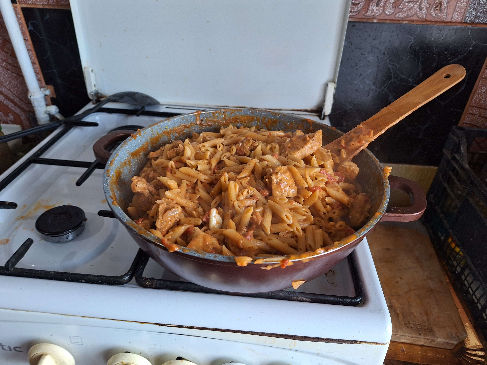

Paste Furioase

Paste Furioase (Angry pasta in english) is a great recipe if you want something highly nutritious that you can cook time-efficiently and in large quantities.
Ingredients
- smoked paprika
- ground garlic
- chilli powder
- salt & pepper
- herbs of choice
- 1 lemon
- 1 onion
- 800g chicken thighs/breast (boneless and skinless)
- 500g pasta of choice(penne is recommended)
- 800g (2 cans) of tomatoes
- 250ml thickened/heavy cream
Steps
- Cut the chicken
- Season the chicken until it changes color
- Heat your pot and add oil
- Add chicken on high heat and stir for about 3 minutes
- Add diced onion and cook for 3 more minutes
- Add 750ml of water/stock
- Add tomato cans
- Add 250ml of cooking cream
- Cook on medium high heat for 15 minutes, stir around to make sure nothing sticks to the bottom